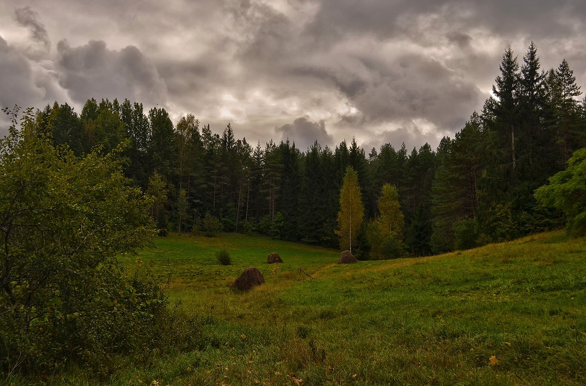

Лес
Снова острая головная боль… Иван открыл глаза: ничего не изменилось, та же
комната. Бежать.
С трудом поднявшись и покачиваясь он подошёл к двери. Подумалось: «Откройся ты!». На удивление дверь
с лёгкостью открылась. Из-за густой пелены мелкого,
но довольно плотного дождя, трудно было различить, что происходит на расстоянии всего в каких-нибудь
пятнадцать-двадцать метров.

Только лес. Многовековой непроходимый… Куда здесь идти, хоть бы один
ориентир! В голове Ивана мелькали фрагменты из школьных лет: правила выживания в лесу… тогда ещё
всем классом смеялись – откуда в нашей степной местности леса…
Не отвлекаться!.. Мох с северной стороны… Идти по руслу реки… Взобраться на возвышенность…